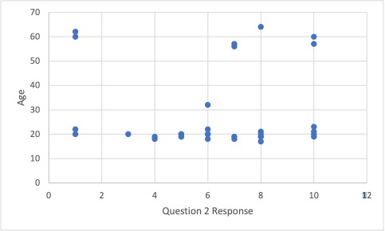

Machine Learning Age Guesser
Created for my final in my Philosophy of Sport class, we were tasked with creating a project that was in some way related to the course. In order to utilize my passion of computer science I decided to create a program that would take answers to philosophical questions and attempt to guess a user’s age.
My Findings:
After creating this program and taking all the input into consideration I found different patterns based on the different questions. Starting with question 1; often age was not a consideration for this question. Almost all users, when collecting data, strongly agreed with the claim that steroid use was considered cheating. This then meant that the first question could not be used to separate the types of users based on age. Moving to the second question, there was no real connection between response and age but there was a slight correlation between increased age and responding with a higher number from the training data as seen by this graph:
This data could help show that generally older people tend to thing that profits made by universities should go to students in that university. Moving on to question 3, there is a clear correlation between age and response to this question. Looking at the graph from the training data:
If anyone responded with a yes to this question, their age was definitely below 30 years old, while if you responded no you could have been much older. This data helps a lot in finding a connection between age and response. Further this shows the philosophically many older people believe that rules are what dictate games, while younger people, although may agree, are not bound by that criteria for a game. This could explain why many younger people don’t view steroid use as such a taboo topic, the rules might not mean as much to a younger individual when compared to an older one. A younger individual might state that you can break the rules (use steroids) and still be participating in that game.
Moving on to question 4; there was a strong correlation between age and question response as seen by the graph:

Looking at the data one can see that any individuals over the age of 50 would respond with a 7 or higher to question 4. This means that they strongly believe student athletes are being exploited, while many younger people have mixed feelings on the topic. This means that older individuals might take issue with student athlete programs and might have some prejudice on the topic. While younger individuals would be a lot more confused on if student athletes are in fact being exploited. This could be explained by the fact that students often see student athletes as very privileged and receiving a lot of care and resources from the university. This is something that adults don’t often get to witness and might explain why they have such a string prejudice on the topic. This would defiantly help the program identify and make decision on age because of this discrepancy in age and response.
Finally moving on to the last question; again, there is a clear connection between the age and type of response given by this graph:
The data points to the fact that anyone over the age of 35 would answer 1 to question 5. This means that older individuals strongly disagree with the idea of breaking the rules if everyone else is. Again, similar to question 4, younger individuals were more uncertain and did not know how to respond. This points to, again, the fact that older individuals focused more on the rules. As older individuals care more about rules, it would point to the fact that steroid use would be seen a much more taboo compared to younger participants.
Overall these findings point to some sort of discrepancy in how older people and younger people respond to these questions. The finding seem to point to the fact that older people generally care more about the rules of the game and more about student athletes versus younger people who are more undefined and differ a lot in opinions.